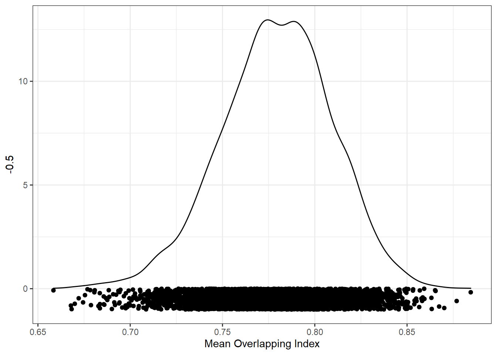
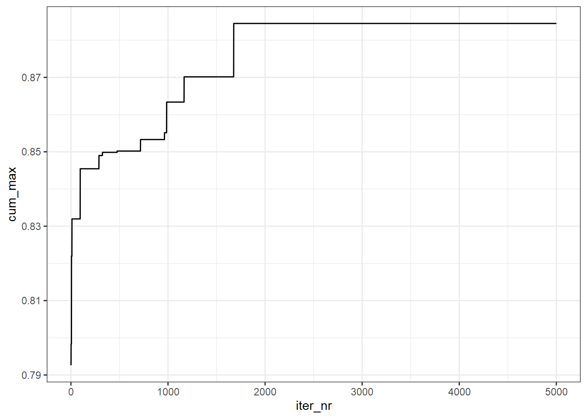

In this example, I show some important things to consider when you’re deciding how many iterations to run. The takeaway message is: more iterations is almost always better, but each additional iteration provides a smaller gain.
As in the previous example, we’ll match control variables across three conditions: young, middle-aged, and old faces. The three variables we’re controlling for are: face_width, face_length, and task_rt. We’ll match for variables using the Overlapping Index (although we could use other statistics if we wanted).
We’ll run a total of 20000 iterations, and show what happens as we vary this number.
library(tidyverse)
library(overlapping) # contains function for calculating overlap indexstim_pool <- read_csv("stim_pool.csv")We’ll create a list of 100 young, 100 middle-aged, and 100 old faces.
First, we define our conditions.
stim_pool <- mutate(stim_pool, cond = case_when(
age<28 ~ "young",
age>35 & age <45 ~ "mid",
age>50 ~ "old"
))This gives us more than >1000 canididates in each condition.
count(stim_pool, cond)## # A tibble: 4 x 2
## cond n
## <chr> <int>
## 1 mid 1047
## 2 old 1116
## 3 young 1202
## 4 <NA> 1635We’ll also create a vector of the labels for our conditions. We can use this for reference later, without having to type out the conditions each time.
cond_labs <- c("young", "mid", "old")As before, we’ll create a vector of a large number of random seeds so we can reproduce our stimulus sets. This time we’ll run 5000 iterations.
set.seed(420) # comment this line out (put # at the start of the line) to get a different result to mine
n_iter <- 5000
seeds <- sample(1:.Machine$integer.max, n_iter)We’ll create a vector of the column names for the variables we want to control for. We’ll use this to loop over the control variables.
control_vars <- c("face_width", "face_length", "task_rt")As before, we want to simulate a large number of random samples. This time, we have multiple conditions, and multiple control variables. To get a better idea of what’s going on here, see example 04 - Matching >2 Conditions.
res <- map_df(seeds, function(seed_i) {
# set the seed, so we can recreate any sample later
set.seed(seed_i)
sample <- stim_pool %>%
# only keep observations from conditions we are interested in (using the condition labels we created earlier)
filter(cond %in% cond_labs) %>%
# for each condition, randomly select 100 items
group_by(cond) %>%
slice_sample(n = 100)
# loop over control variables to get the ov values for this sample
control_ov <- sapply(control_vars, function(var_i) {
# loop over conditions, to get this control variable's values for each condition
var_i_vals <- lapply(cond_labs, function(cond_j) {
sample %>%
filter(cond == cond_j) %>%
pull(!!var_i)
})
# get the degree of overlap on the control variable between all condition comparisons
ov_results <- overlapping::overlap(var_i_vals)
# extract the actual value for the degree of overlap...
# since there are three conditions, this will be a vector of length three...
# I suggest taking the minimum so we know that the match we have for the other comparisons is at least as good
min(ov_results$OV)
})
# return a dataframe with the overlap for the three control variables
tibble(seed = seed_i, control = control_vars, ov = control_ov)
})As in previous examples, we want to match overall overlap, so we can just calculate the average overlap for each seed:
res_summ <- res %>%
group_by(seed) %>%
summarise(mean_ov = mean(ov))Remember, we want to match conditions using overlap in all variables. Here is the distribution of the mean of the overlap index values.
ggplot(res_summ, aes(mean_ov)) +
geom_density() +
geom_point(aes(y = -0.5), position = position_jitter(height=0.5)) +
xlab("Mean Overlapping Index")
The density plot above shows the distribution of all overlap index values. After running 5000 iterations, we just select the best stimulus set. But what if we’d stopped at just 1000 iterations? What about just 500?
We can answer this question by calculating the cumulative maximum of the overlapping index. This will give us the best match if we’d stopped at 1 iteration, 2 iterations, etc. Here is the result.
res_summ %>%
mutate(
cum_max = cummax(mean_ov),
iter_nr = row_number() # because each row in res_summ is one iteration
) %>%
ggplot(aes(iter_nr, cum_max)) +
geom_line()
If we’d run for 500 iterations, we’d get a maximum average overlap of about 0.85. If we’d run for 1000 iterations, this would reach about 0.865. Our final result was 0.884. Between 2000 and 5000 no better matches were found, though if we ran for a bit longer (e.g., 10000 iterations), we would most likely get even better matches.
Notice that as we add more iterations, we get better matches, but the increase in overlapping index becomes smaller and smaller. At some point, you can expect adding iterations to make no practical change in the quality of the matching. This makes sense - as we add samples from population, the chance that any observation will be the maximum decreases over time.
The exact number of iterations we need to get a good match will depend on several characteristics, such as the number of conditions, and the number of control variables. As you increase the complexity of the design, you’re essentially adding more degrees of freedom. The more things that can vary in your design, the more possible solutions there are, and so the more iterations you’ll need to get a match of similar quality.
My advice is to create a plot like that above, and see how close you are to levelling off the improvement in your statistic. If the results are levelling off at a poor result (e.g., an average overlap of 0.5), it might be that a good match might not be possible for your sample. This could either be because of a small pool of candidates, or because of a collinearity in the data.